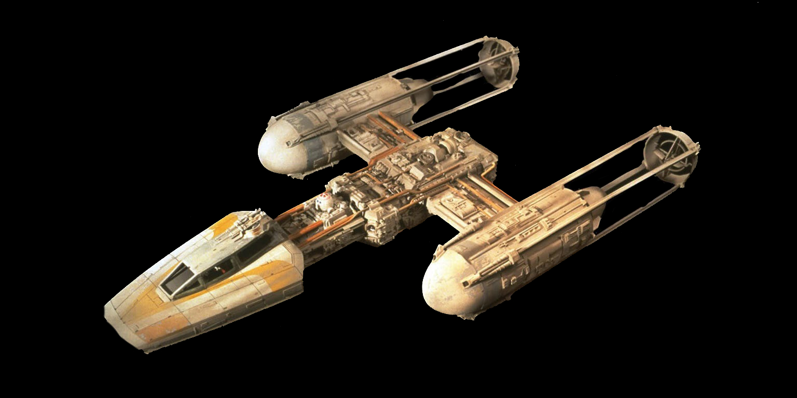

|
 Y-Wing Starfighter-bombázó135 000
|
Y-Wing Starfighter-bombázó történeteGyártó: Koensayr Manufacturing Az Új Köztársaság bármelyik osztagának nehéz ütőere, a többfunkciós Y-szárnyú bombázó az Új Köztársaság más hajóihoz képest lomha lehet. De amit a sebességéből hiányzik, azt bőven pótolja állóképességben és tűzerőben. Míg a felszerelése miatt félelmetes az 1-1 elleni küzdelmekben, az Y-szárny a csatahajók elleni támadások során ragyog, ahol a megerősített burkolat, az erős pajzsok és a pusztító felszerelés döntő tényező lehet a flottatámadásokban. Felszerelése
|